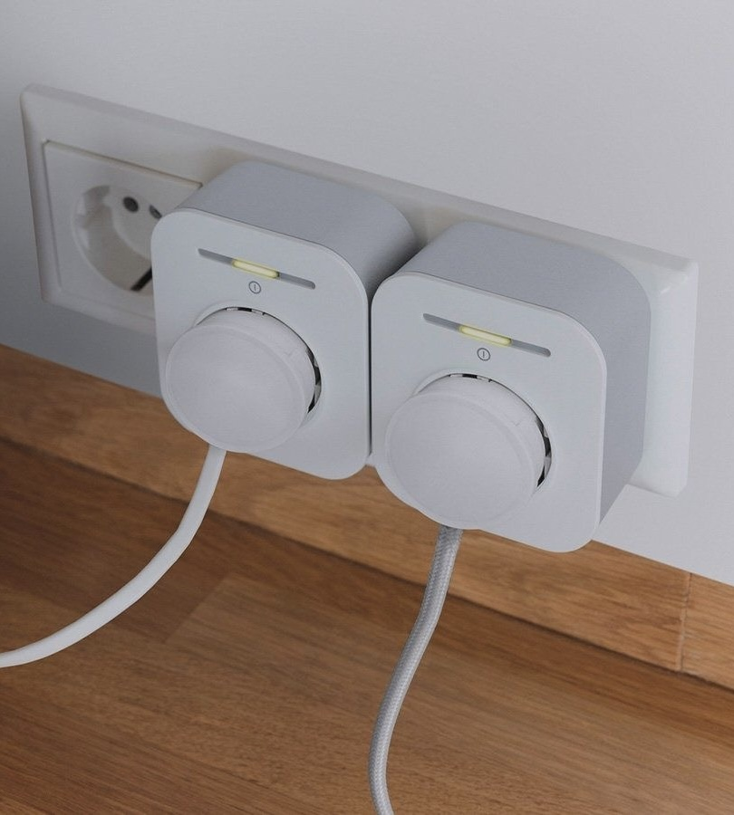
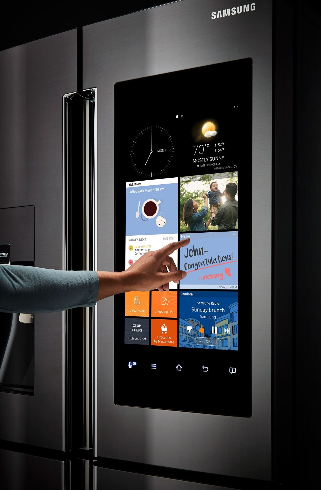

Motion Sensor Lights
CHF 200
More details
Smart devices that work out of the box - without unnecessary complexity.


Core automations run locally. Internet is only for remote control and updates.
Open the app → “Add device” → scan the QR → pick a room. About one minute.
Yes, devices use shared standards, so lights, plugs, and sensors can work together.
Traffic is encrypted. Local control keeps routine actions inside your home network.